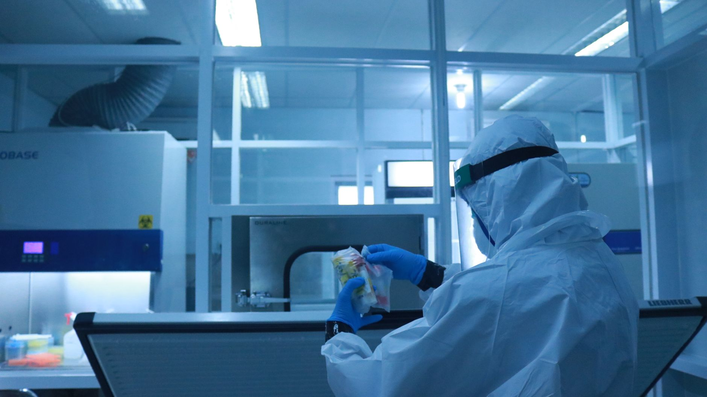

한국 방산 기업, 제3국 통해 희토류 우회 조달

중국의 중희토류 수출통제 강화 조치가 본격화되면서 국내 방위산업 기업들이 제3국을 경유한 우회 조달 전략을 내부적으로 가동 중인 것으로 확인됐다. 중앙일보 영문판 코리아중앙데일리의 단독 보도에 따르면, 일부 방산 기업은 말레이시아·베트남 등 동남아 국가를 통한 간접 수입 루트를 이미 시험 가동하고 있다.
중희토류(Heavy Rare Earth Elements)는 디스프로슘(Dy), 테르븀(Tb) 등을 포함하며, 전기차 모터·휴머노이드 로봇·AI 데이터센터 냉각 시스템·방산 유도무기에 들어가는 고성능 영구자석의 핵심 원료다. 문제는 전 세계 중희토류 생산의 90% 이상이 중국에 집중돼 있고, 한국의 특정국 의존도는 무려 99%에 달한다는 점이다.
중국은 2026년 들어 중희토류 수출 허가를 대폭 강화했다. 상반기 기준 대일(對日) 수출이 전년 동기 대비 약 50% 급감했고, 미국으로의 수출도 40%대 감소세를 기록했다. 반면 네덜란드로의 수출은 121% 급증해 유럽 내 재수출 허브 역할이 커지고 있음을 시사한다.
국내 방산 업계에서는 이미 중국산 희토류를 사용하지 않는 구동 모터 개발을 추진하는 업체가 등장하고 있다. 현대차그룹의 로봇 공급망 재편 과정에서 1차 협력사 디아이씨가 '탈중국 희토류 모터' 솔루션을 제안한 것이 대표적 사례다. 이는 방산에서 로봇·전동화 전 분야로 탈희토류 움직임이 번지고 있음을 보여준다.
정부도 이 문제를 국가 안보 리스크로 인식하고 있다. 정부가 최근 발표한 '7대 SEED 프로젝트'에는 핵심광물 특정국 의존도 감축이 포함됐으며, 영구자석용 중희토류 조달선 다변화를 위한 국제 협력 과제도 명시됐다. 이와 별도로 지질연·KOTRA가 핵심광물 공급망 위기 대응 협력을 강화하는 체계를 공식 출범시켰다.
제3국 우회 경로의 리스크도 적지 않다. 중국은 자국산 희토류의 최종 사용지를 추적하는 '원산지 추적 시스템'을 강화하고 있으며, 우회 거래 적발 시 해당 국가 및 기업에 추가 제재를 가할 수 있다. 실제로 중국은 지난달 이란과 희토류 기술 협력을 강화하는 협약을 체결해 서방 진영을 자극하는 외교 카드로도 활용하고 있다.
미국 군사 전문지 더 디플로매트(The Diplomat)는 최근 '미군은 중국 없이는 작동할 수 없다'는 제목의 분석 기사에서 희토류 의존도 문제를 미국 국방력의 아킬레스건으로 지목했다. 미 국방부는 이에 대응해 핵심광물 대체 조달에 1500억원을 투자하고, 스칸듐 프로젝트에 4000억원 규모의 조건부 융자를 집행하는 등 공급망 다변화를 서두르고 있다.
국내 방산·전자 업계가 당장 활용할 수 있는 대안으로는 카자흐스탄, 미얀마, 인도 등지의 희토류 광산 지분 투자나 장기 공급계약 체결이 꼽힌다. 그러나 이들 국가의 생산 인프라가 충분히 갖춰지기까지는 최소 3~5년의 시간이 필요하다는 것이 업계의 공통된 시각이다.
도시광산(Urban Mining) 기술도 단기 대안으로 부상 중이다. 폐전자기기에서 희토류를 회수하는 기술 수준이 높아지면서, 분쟁광물 대체 수단으로 각광받고 있다. 국내에서는 한국지질자원연구원을 중심으로 폐영구자석 재활용 기술 개발이 진행 중이며, 2028년 상용화를 목표로 하고 있다.
영구자석 소재 대체 기술 개발도 병행되고 있다. 희토류 사용량을 줄인 페라이트 기반 자석이나, 희토류 프리(free) 고엔트로피 합금 영구자석 연구가 KAIST, 포스텍 등 국내 연구기관에서 활발히 진행 중이다. 그러나 고성능 구현까지는 아직 기술 간극이 상당하다.
전문가들은 단기·중기·장기 대응을 동시에 가동해야 한다고 강조한다. 단기적으로는 전략 비축량을 늘리고, 중기적으로는 제3국 조달선을 다양화하며, 장기적으로는 희토류 저감·대체 기술을 내재화하는 3단계 전략이 필요하다는 것이다. 방산 업계의 한 관계자는 "공급망 안보는 더 이상 경제 문제가 아닌 국방 문제"라고 강조했다.
중희토류 리스크는 방산에서 출발해 전기차·로봇·AI 인프라 전체로 확산되고 있다. 정부와 산업계가 함께 공급망 지도(Supply Chain Mapping)를 작성하고 취약 지점을 선제적으로 해소하지 않으면, 향후 지정학 위기 시 핵심 산업 전체가 멈출 수 있다는 경고음이 커지고 있다.